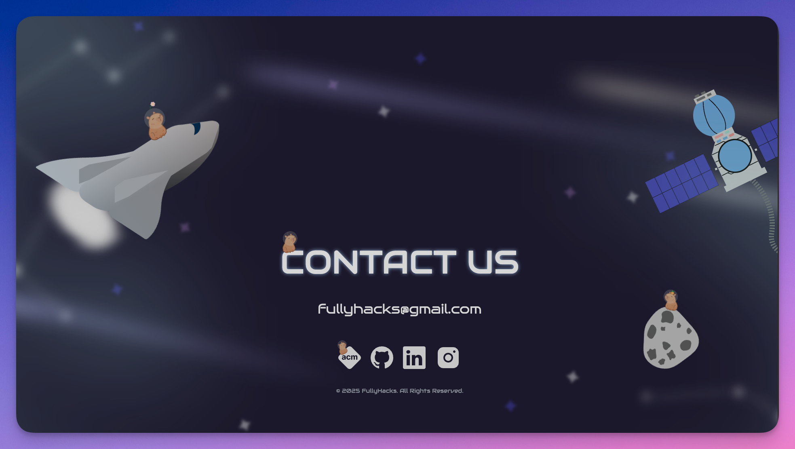

FullyHacks 2025

Description
I worked in a team of 5 completing two things, the footer and event component. Using technologies such as React and tailwind really made the workflow nice and simple
Technologies Used
Challenges Faced
While working on this project I faced challenges like writing clean code, having a cleaner UI, and understanding of react
Outcome
It was an amazing experience working with others and having such a nice team. I learned a lot regarding React and Tailwind. I definitely improved on my UI skills
View on GitHub